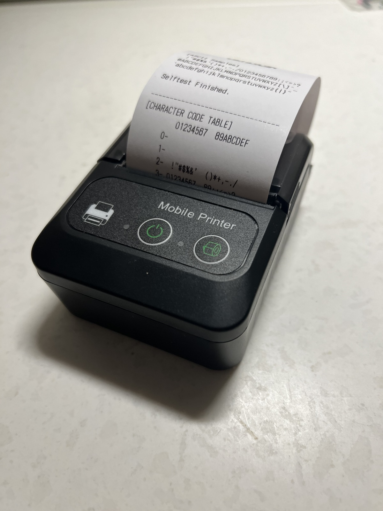

Кассовая лента
Кассовую ленту можно встретить на каждом шагу: банкоматы выдают нам чеки о проведенных операциях, магазины предоставленных нам услуг, в ресторанах о том, какие блюда были поданы на стол и т.д. Кассовая лента стала незаменимым помощником в сфере торговли и предоставления услуг. Чековая лента хороша тем, что для нанесения на нее информации не нужно использовать тонер или чернила. Метод печати чеков называют бесчернильным. Осуществляется он благодаря нагреву термобумаги в определенных местах Существует два вида лент:
Однослойная кассовая лента производится из офсетной бумаги, поверх которой наносится слой термохимического покрытия. Последние пять метров бумаги имеют красную полосу, свидетельствующую о необходимости сменить рулон. Ширина ленты выбирается в зависимости от модели принтера, в котором она будет использоваться. Диаметр ролика кассовая лента термо 54 - 70 миллиметров.
Двухслойная лента состоит из двух и более слоев. Помимо термохимического покрытия такая бумага имеет еще самокопирующий слой, позволяющий проводить отчетность. Один чек выдается на руки покупателю, а второй - остается в аппарате. Чаще всего ширина ленты составляет 44/75/57/69 миллиметров, кассовая лента 57, кассовая лента 80, кассовая лента 57 мм, кассовая лента 80 мм, Диаметр ролика 54 - 70 миллиметров.
После того, как контрольно кассовая лента будет извлечена из аппарата, срок ее хранения составляет около трех лет. Обязательно стоит избегать попадания прямых солнечных лучей, так как под их воздействием информация выгорает.
Преимущества кассовой ленты очевидны:
- печать не нуждается в дополнительных расходных материалах;
- быстрое и качественное нанесение любой графической ибуквенно-цифровой информации;
- при использовании многослойного материала, есть возможность сразу же оставлять копию чеков, что облегчает процесс отчетности;
- никогда не возникает вопросов, как вставить кассовую ленту или как поменять кассовую ленту, так как сделать это может даже новичок;
- невысокая цена. Цена на один рулон чековой термоленты варьирует в пределах 0,50 - 1 доллара и зависит от ширины самой ленты, количества ее слоев и метража.
В нашем магазине представлен огромный выбор расходных материалов для кассовых аппаратов, включая чековую ленту. Кассовая лента купить ее можно в любое время, стоит только связаться с нашими специалистами. Адреса и телефоны можно найти в разделе контакты. Свяжитесь с нами, и мы сделаем все возможное, чтобы вы остались довольны своей покупкой.
Первый абзац
Типовая текстовая страница
Очень длинный заголовок типовой страницы, чтобы настроить междустрочный интервал (интерлиньяж)
Лид — это первый абзац статьи, информативный отрывок позволяющий захватить внимание читателя на данном материале. Необязательный элемент.
Эта страница создана для демонстрации блоков и элементов, которые используются на сайте, и служит руководством для всех, кто работает над ним. Дизайнеры и технологи отрабатывают здесь стили, чтобы добиться приемлемых результатов в различных сочетаниях блоков и элементов. Контент-менеджеры и редакторы используют страницу в качестве справочника по верстке типовых страниц. Здесь же рассказывается о некоторых общих правилах оформления контента.
Заголовок h1 на странице должен быть использован только один раз!
Заголовок со ссылкой на Текст ссылки Фото чекодрука
{kind=link}